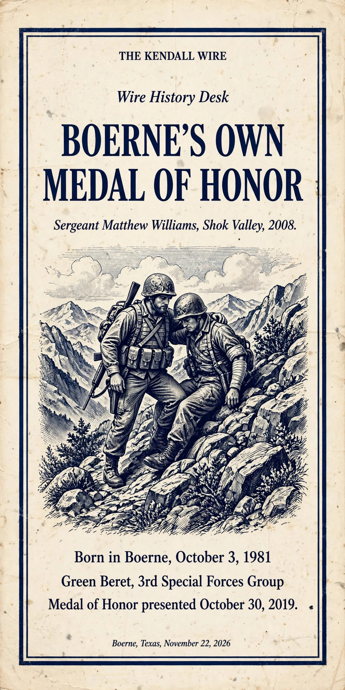

Boerne's Matthew Williams earned the Medal of Honor in the Shok Valley
Matthew O. Williams was born in Boerne on October 3, 1981, and spent most of his childhood here. He met his wife, Kate, in elementary school. After high school he went to Angelo State University in San Angelo and earned a degree in criminal justice, planning on detective work or the FBI.
After the attacks of September 11, 2001, he changed direction. Williams enlisted in the United States Army in 2005 and earned the Green Beret, qualifying as a Special Forces weapons sergeant with the 3rd Special Forces Group. His first deployment took him to Afghanistan with Operational Detachment Alpha 3336.
On April 6, 2008, his team and roughly 100 Afghan commandos were inserted by helicopter into the Shok Valley, a mountainous area in northeastern Afghanistan, on a mission against a high-value target. As the lead element climbed a steep mountainside toward the objective, about 200 insurgents opened fire with machine guns, sniper rifles, and rocket-propelled grenades. The lead element was pinned down on the terraces of the mountain and taking casualties.
Williams, who had remained near the landing zone with a group of Afghan commandos, heard that the lead element was in danger of being overrun. Under intense fire he led a counterattack up the valley, across ice-covered boulders and a fast-moving, waist-deep river, and up the mountain to the trapped men. He treated the wounded where they lay, exposed himself to enemy fire again and again to move casualties to cover, and helped lead his gravely wounded team sergeant down the mountain to the casualty collection point.
Then he went back up. Williams and another sergeant scaled a sheer cliff, completely exposed, to rejoin the fight, where he shielded the wounded from falling rubble as American aircraft bombed the insurgent positions above them. He directed close air support and the evacuation of the wounded by helicopter. By the end of the battle, four wounded American soldiers had been brought down alive. No American was killed in the Shok Valley that day.
Williams was first awarded the Silver Star for the battle. Staff Sergeant Ronald Shurer II, who fought beside him, received the Medal of Honor for the same fight in 2018. On October 30, 2019, Williams' Silver Star was upgraded, and President Donald Trump presented him the Medal of Honor at the White House. He was a master sergeant at the time of the presentation, and he was promoted to sergeant major on February 28, 2020.
Two weeks after the White House ceremony, Representative Chip Roy of Texas's 21st Congressional District rose in the House to honor him, closing with this: "Master Sergeant Williams, from Boerne, Texas, the State of Texas and the entire Nation is proud of the honor you received."
Sources
- Medal of Honor citation and biography, Matthew O. Williams (Wikipedia, citing U.S. Army records): https://en.wikipedia.org/wiki/Matthew_O._Williams
- Remarks by President Trump at the Medal of Honor presentation, October 30, 2019: https://trumpwhitehouse.archives.gov/briefings-statements/remarks-president-trump-presentation-congressional-medal-honor-master-sergeant-matthew-williams-u-s-army/
- Congressional Record, Honoring Master Sergeant Matthew Williams, November 14, 2019: https://www.congress.gov/congressional-record/volume-165/issue-182/house-section/article/H8832-1
- Rep. Chip Roy statement, October 30, 2019: https://roy.house.gov/media/press-releases/rep-chip-roy-tx-21-medal-honor-recipient-master-sgt-matthew-williams
Sources
- Medal of Honor citation and biography, Matthew O. Williams (Wikipedia, citing U.S. Army records)
- Remarks by President Trump at the Medal of Honor presentation for Master Sergeant Matthew Williams, October 30, 2019
- Congressional Record, Honoring Master Sergeant Matthew Williams, November 14, 2019
- Rep. Chip Roy statement on TX-21 Medal of Honor recipient Matthew Williams